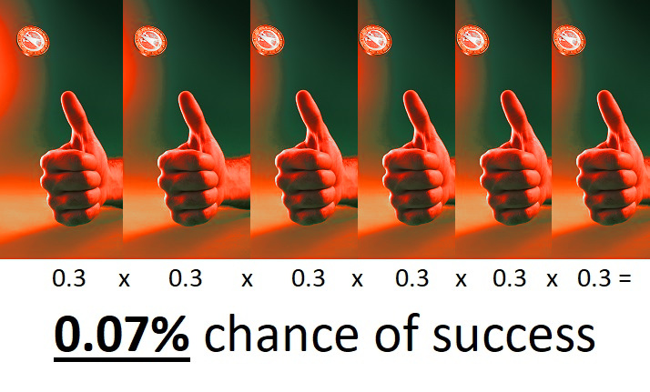

Why some people never get lucky
"It is only with the heart that one can see rightly; what is essential is invisible to the eye." - Antoine de Saint-Exupéry, The Little Prince
Upside decay means that an organization doesn't get any lucky breaks.
Here's how it manifests if we think of luck as having a normal distribution:
The reduction in area under the curve (the orange part) represents the loss of positive outcomes. The total loss is small, but it's concentrated in the right tail of the curve where the extreme successes happen. This is upside decay and it's much worse than it looks on the graph.
Why upside decay is so harmful
Here's a per capita GDP chart for the United States.
GDP per capita has increased for two centuries, driven by improvement in Total Factor Productivity, also known as technological inventions and breakthroughs.[1] This comes from many people trying out different things, each of them individually unlikely to succeed. The ones that do succeed, though, create an outsized impact. Like in venture capital, one big discovery creates enough progress to subsidize all the others that didn't work out.
This means that progress happens in bursts, when everything goes right and a new invention or discovery happens. For example, we might need six things to go right for a successful discovery. Under normal circumstances each one has a 50% chance to succeed.
1.56% is already a low chance. But with upside decay reducing the chance of success from 50% to 30%, this is what happens:
Our 1.56% chance of success is now only 0.07%. Upside decay hits low-probability events hardest because so many things have to go right.
Finding upside decay doesn't help us
Upside decay is hard to spot. It's invisible if we're not specifically looking for it, because the absence of rare positive events is unexceptional. Even when people finally notice something is wrong, they'll usually attribute it to malign actors, imaginary enemies or conspiracy theories.
Being on the lookout for missing positive tail events is not good enough, because it takes too long. By the time we have a long enough history to identify the presence of upside decay, it will already be far advanced. What's worse, upside decay has corrosive effects on organizations. Trying to connect with people becomes sluggish and hard. Things which were easy become longer, slower, more tedious. Problems that are left unattended will metastasize. Motivated people can still push projects through and deal with problems, but it takes all their time and energy and burns them out.
An example: China
China was free of upside decay for decades, rapidly growing its economy while enjoying relative social and political stability. In recent years, though, the Chinese Communist Party (CCP) has found its goals being thwarted.
Its primary economic goal is to enjoy the benefits of globalization and keep its export engine humming. Additionally, it would like to move up the manufacturing value chain and master cutting-edge technology. China also wants to preserve its supply chain dominance, which has made it the World's Factory even as wages have increased.
Its primary political goal is domestic stability. The CCP wants greater control over its people, especially in its periphery, as it believes that instability is a threat to its power. It wants to secure its "living space", the area in its near abroad that assures the safety of its trade and supply lines. This includes the South China Sea, the East China Sea, the Himalayas, and Taiwan.
China wishes to control the maritime territory bounded by its rather optimistic "Nine-Dash Line", as shown in the above picture, in order to ensure its own security.
Things aren't looking good. International events are threatening China's economic goals. The United States now treats it as an enemy, with the destruction of Huawei as a recent example, and is attempting to decouple from China. Even Germany, long focused on the money it makes from transferring its technology to China, is having second thoughts.
The political landscape has worsened even more. In its pursuit of stability, the CCP has applied its Tibetan repression techniques to other peripheral areas, such as Xinjiang, Hong Kong, and Inner Mongolia. There is considerable pushback to its newest round of repression. As another example, its South China Sea takeover previously met minimal opposition, with Obama merely producing verbal admonishments and smaller countries surrendering to its fait accompli. But it is now experiencing strong pushback from the United States and other interested parties.
This newfound resistance is an unpleasant shock for the CCP. But it shouldn't have come as a surprise, because China is in an advanced stage of upside decay. China will enter economic stagnation regardless of its policies. Politically, it faces an unpalatable choice between open confrontation (economic failure) or strategic retreat (political failure).
How to identify upside decay early
China is a particularly clear example of the causal mechanism of upside decay. Upside decay is preceded by a lack of virtue.[2] The frequency and severity of the CCP's unvirtuous actions has accelerated in recent years. The most recent instance is its coverup of Covid-19, refusal to take responsibility, and spreading of a conspiracy theory about its origin. But there are others, such as
- Promising not to militiarize South China Sea islands and then doing so a year later,
- Promise fatigue, a pattern of promising things and then not doing them,
- Unilaterally declaring that the Sino-British Joint Declaration, the most important international agreement they signed in decades, no longer applies,
- Repression and imposition of a draconian national security law in Hong Kong,
- Unprovoked invasion into Indian-held territory,
- Concentration camps and demographic genocide in Xinjiang,
- Cultural genocide in Tibet,
- Hostage diplomacy, a strategy previously only used by rogue states,
- Economic punishment for political events, such as banning South Korean pop music, Norwegian salmon exports, or Australian exports.
There's a good reason why lack of virtue causes upside decay, and why virtue isn't just a feel-good luxury: weak ties.
Weak ties control upside decay
Unvirtuous actions cause upside decay through the mechanism of weak ties.
Strong ties are conspicuous. Weak ties are inconspicuous but numerous, and help in unexpected ways. When weak ties are activated, they can be more helpful in aggregate than strong ties.
But weak ties will not help an unvirtuous organization! Weak tie assistance is voluntary and altruistic. This means that they only help those they think are virtuous.
Without weak ties, organizations resort to strong ties and hard assets. This leads them to adopt a mercantilist approach. Their zero-sum mindset alienates others and makes them even less virtuous, because their positive-sum actions are now viewed suspiciously by others. Left with no choice but to double down on their zero-sum approach, they'll antagonize all their weak ties and enter upside decay.
This also explains why their good luck disappears but they don't suffer much additional bad luck. Weak ties mostly aren't motivated enough to hinder an unvirtuous organization, but they'll gladly refuse to help.
How to avoid upside decay
Avoiding upside decay is simple but difficult. The organization needs to build a virtuous culture that leads to a positive feedback loop. At the same time, it needs to punish bad actions that have short-term benefits.
This is hard because investments in a virtuous culture have no visible effect at the start, so they will tend to be unrewarded. Punishing unvirtuous actions is also difficult because the bad actor can point to the tangible benefits, while the long-term upside decay is invisible. It must be vigilantly enforced from the very top of the organization.
Most companies follow Facebook's path to unvirtue. At every turn, given the choice between virtue and advertising revenue, Facebook chose revenue. Facebook won't be able to escape upside decay; even when it tries to acquire healthy teams, they tend to quit soon afterwards. Like Zuckerberg, most CEOs tend to focus on profitability and growth instead of culture, because that's what they are rewarded for.
There do still exist some examples of good corporate culture. Warren Buffett's Berkshire Hathaway has created this culture over many decades, so that it benefits from a "seamless web of deserved trust". I'd expect Berkshire Hathaway's culture to survive the transition from Buffett to his successor for at least a few decades. Costco is likewise known for its virtuous culture, and it too looks secure. In fact, one of the warning signs for decay in Costco's culture would be if their profit margins started increasing!
Virtue takes decades to build. What better time to start than now?
1 ↩ Total Factor Productivity also includes better processes and organizational methods, but I consider these process technology and organizational technology respectively. Solow model!
2 ↩ I use virtue to mean moral actions. For example, helping someone in need is moral. Stealing their wallet is immoral.